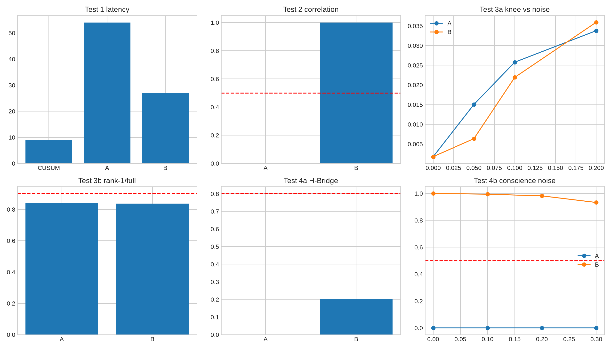

结论：不能。卡住形式化的不是框架。
我们用自己的世界表征重做了一遍：一版是「压缩 + 纯高斯噪声」（版本 A），一版是「马尔可夫部分 + 记忆核 + 正交噪声」（版本 B，Mori–Zwanzig 分解）。两个独立模型复核后的结论一致：作为描述世界的方式，A 和 B 都没有比 POMDP 信念状态、AIXI/Solomonoff、贝叶斯非参数、主动推断多表达任何东西。开放的、会增长的状态空间，这些框架早已覆盖。
真正多出来的只是一条对智能体的约束：残差保留不丢弃，且残差带有时间结构。它只在版本 B 里有意义，与「噪声是否纯」无关。
预注册测试中，没有任何一项给出独立的正面证据。公开页现有的结论不需要改写。
此前的判断是：纯粹觉知、良知本体、无意图的无为、行苦、中观对信息本体论的清空，这几个概念无法在经典决策论里形式化，属于范畴错误。本轮要检验的假设是：这也许只是因为经典决策论预设了一个事先给定的、有限的状态空间；如果换成我们自己的世界表征，障碍可能就消失了。
为此我们提出一个对照问题：新表征相对已有框架到底多了什么？并给每个概念设计了可以被证伪的测试，判据在运行前写定并锁成只读。
表征本身不增加表达力这一先验成立。A 和 B 可以分别嵌入已有框架：A 是带噪声观测的压缩信念，B 是带记忆项的广义朗之万描述，二者都在 POMDP 与贝叶斯非参数的表达范围之内。
有操作意义的只有三条智能体层面的约束：结构与残差的边界由智能体自己选；智能体对残差不赋予偏好；残差被保留而不是丢弃。在版本 A 中，残差是独立同分布的噪声，保留它什么也不改变；只有在版本 B 中，残差有时间结构，保留它才会影响后续行为。这属于信号处理常识，不是表征上的创新。
五条范畴错误的判定都与框架无关。「应然不能从实然推出」和意识的困难问题，不是任何计算框架的一个可替换假设，换表征碰不到它们。
| 测试 | 对应概念 | 判据 | A | B | 说明 |
|---|---|---|---|---|---|
| 1 弱新因子检出 | 纯粹觉知 | 比 CUSUM 检测快至少 20% | 未通过 | 未通过 | 中位延迟：CUSUM 9 步，A 54 步，B 27 步 |
| 2 共享可压缩结构 | 良知本体 | 关怀与共享结构相关，且在噪声下存活 | 未通过 | 无信息 | B 的数值通过，但「关怀」的定义就是用来打分的共享压缩量，通过是同义反复 |
| 3a 无为膝点 | 无意图的无为 | 零噪声下膝点强度 ≥ 0.15，且随噪声减弱 | 未通过 | 未通过 | 强度约 0.0018，且随噪声增强，方向与假设相反 |
| 3b 低维控制 | 无为 | 秩 1 与全秩得分比 ≥ 0.90，能量失配 ≤ 5% | 未通过 | 未通过 | 得分比约 0.84，能量失配约 95% |
| 4a H-Bridge 留出集 | 觉悟 | 留出集成功率 ≥ 80% | 未通过 | 未通过 | A 0%，B 20% |
| 4b 噪声下的良知 | 良知 | 关怀在 0–30% 噪声下保持 | 未通过 | 无信息 | B 相关约 1.00 / 0.99 / 0.98 / 0.93，但与测试 2 同样是同义反复 |

为什么把两项「通过」标成无信息：版本 B 中，智能体的「关怀」被直接定义为预先冻结的共享压缩量，而测试的评价目标也是同一个量。所以它通过，只说明这个量在噪声下比较稳定，并不是对道德行为的独立预测。版本 A 在这里只产出常数分。对照策略（宽容以牙还牙）与压缩共享结构无关，也无法充当有效基线。
判据文件在运行前写定并设为只读，随机种子与判据按注册执行。前三次运行因早期实现问题中止，失败产物全部保留；最终运行改为并行批处理，但没有改动注册的方程与判据。批处理与逐条实现之间有一处约 0.063 的浮点差异，远低于未达标的幅度，不影响判定。探索性的后续分析单独存放，不计入判定。
arXiv 2609.29755（Hartl、Montero、Barylli、Risi、Levin）核实为一篇合著论文，只能当作结构上的类比，不构成决策论或意识方面的证据。